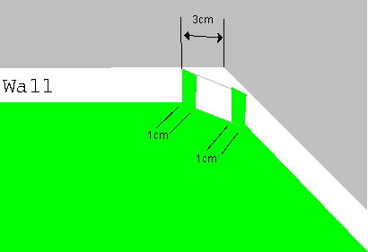

Four small panels are attached to the corner to avoid ball to stuck. As shown in the figure below, it should be located 3 cm from the corner for each axis. Green strips of width 1cm shall be painted to identify the edge of the panel. 
For details of the Table Tennis, please refer to International Table Tennis Federation, Regulations. The regulation of the table hight do not apply. We will provide appropriate hight for RoboCup, so that global vision can be used easily.